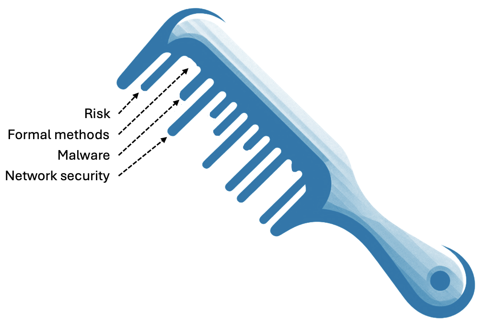
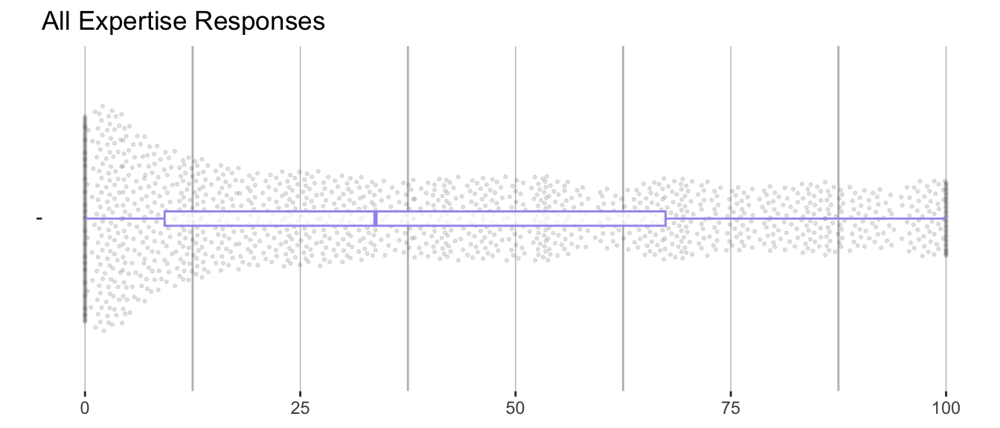
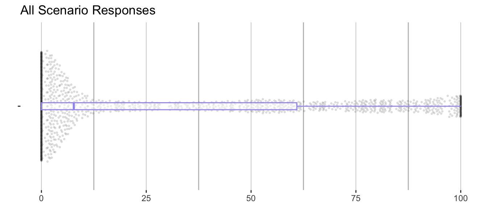
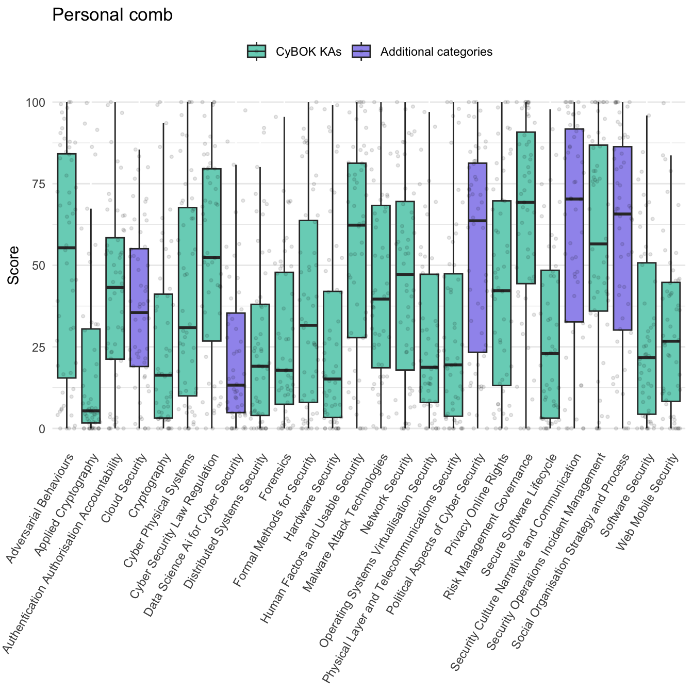
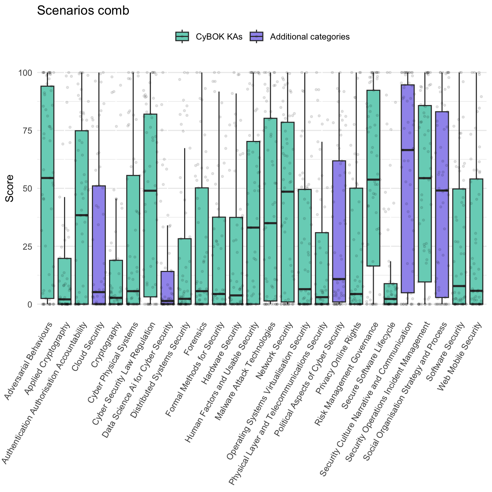
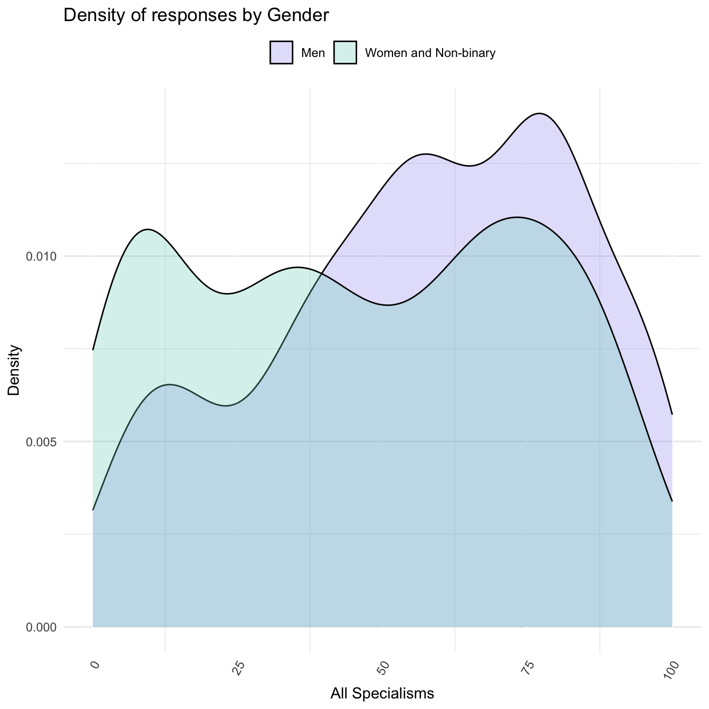

| Age | N | Percent |
|---|---|---|
| 20-25 | 4 | 7.1% |
| 26-29 | 1 | 1.8% |
| 30-39 | 10 | 17.9% |
| 40-49 | 15 | 26.8% |
| 50-59 | 18 | 32.1% |
| 60 and over | 5 | 8.9% |
| I prefer not to answer | 3 | 5.4% |
2 The Cyber Expertise Diversity Survey
2.1 Design and distribution
To address our research aims, we designed a survey to gather data on the diversity of expertise within the cyber security profession, in the UK, and on the value of diverse expertise in relation to the problems cyber security practitioners face in their work. The Cyber Expertise Diversity Survey consisted of a total of 21 questions grouped in the following blocks:
A first block about the respondent, where we asked them 5 questions about their job and workplace (i.e. role, number of years of experience, size and sector of their workplace) followed by an optional set of six questions about EDI (i.e. age bracket, disabilities, ethnic origin, gender and sexual orientation).
A block called “Expertise profile” (or expertise comb -see Section 2.1.1 below), where we asked participants to rate their perceived expertise around 26 areas, 21 areas identified by the Cyber Security Body Of Knowledge (CyBOK) (Martin et al. 2021) and 5 extra categories added by the authors1.
A block called “Problems or Challenges” (or scenarios comb), where we asked participants to describe one or more scenarios from their working experience in which resolving a problem required a combination of forms of expertise to be brought together. For every scenario, respondents were asked to provide a brief title and description, state whether it was related to their current job (and if negative, to provide information about job and workplace), and rate the amount of expertise needed to address the scenario, using the same 26 categories used in the previous block.
An optional block with free text comments, where we asked participants to list any areas of expertise that they may consider to be missing, and to provide any feedback about the survey.
1 The 26 categories used were: adversarial behaviours, applied cryptography, authentication authorisation accountability, cloud security, cryptography, cyber physical systems, cyber security law regulation, data science ai for cyber security, distributed systems security, forensics, formal methods for security, hardware security, human factors and usable security, malware attack technologies, network security, operating systems virtualisation security, physical layer and telecommunications security, political aspects of cyber security, privacy online rights, risk management governance, secure software lifecycle, security culture narrative and communication, security operations incident management, social organisation strategy and process, software security, web mobile security
The survey was created using Qualtrics, and was configured to only accept responses from people based in the UK, and not to collect personal details. Ethical approval was given by the University of Warwick’s Humanities and Social Sciences Research Ethics Committee (HSSREC)2. To ensure informed consent, we designed the survey to include key information for participants about purpose and data use in the initial pages, as well as a separate downloadable participant information leaflet. Because we did not collect personal identifying data in the survey, we generated a random identifier for participants to store, should they wish to withdraw from the study or get in touch with us about their responses at a later date. Participants were not offered remuneration for their time.
The survey was accepting responses between 12/09/2024 and 19/11/2024. Because this was a resource-constrained exploratory project, we followed a convenience sampling approach, distributing the survey via cyber security industry mailing lists and via the LinkedIn social media network (see Section 2.3.1 below).
Anonymised results can be found in a companion repository (Cámara-Menoyo, Spencer, and Monteath 2025). The repository contains additional material such as metadata describing every variable, the scripts used to clean the data, and a PDF version of the survey, following FAIR principles (Wilkinson et al. 2016) and released under an open licence, to foster discoverability and reuse.
2.1.1 The comb concept
The survey is built around the metaphor of a ‘broken comb’ of expertise, with each ‘tooth’ in the comb representing one area of expertise. For blocks 2 and 3, we asked survey participants to imagine their expertise as a kind of comb where each ‘tooth’ of the comb represents one area of specialism. Some cyber security professionals have one or two areas in which they have a lot of expertise, other areas in which they have a little, and some in which they have none. Some people have a broad base; others are highly specialised. It can depend on domain, career stage, and individual personality.

The survey used an interface based on a series of sliders through which participants could express how they saw their own ‘broken combs’ of expertise, and to define similar ‘broken combs’ reflecting the combinations of expertise required to address cyber security problems and challenges that they tackle in their work.
We based the ‘teeth’ of the comb on the knowledge area classification developed by the ‘CyBOK’ project (Martin et al. 2021), extended slightly to account for areas that are not accounted for in the standard CyBOK classification (see Section 4.2.1).
We thus gathered three types of combs to support the analysis.
The personal comb is just the values that a person put in for their own expertise using the sliders. For alignment calculations we only use the CyBOK values.
The specialism comb is a representation of the Cyber Careers Framework’s CyBOK mapping: we create these by assigning a numeric value to what the UKCSC considers to be ‘core’, ‘related’ or ‘wider’ relevance to each specialism.
The scenario comb is the values that a person put in for that specific scenario using the sliders. For alignment calculations we only use the CyBOK values.
2.1.2 The alignment metric calculation
In order to see how well (or badly) are two combs aligned, we compute an alignment index \(A_{(x,y)}\) as follows.
Given a set of test values \(X:[x_0, x_1, ... x_n ]\) and a corresponding set of reference values \(Y:[y_0, y_1, ... y_n ]\), the alignment index will be:
\[ A_{(x,y)} = \frac{\sum I(X)}{\sum Y} \]
Where the indicator function \(I(X)\) is defined as follows:
- \(I(X) = x_m\) when \(x_m \leq y_m\)
- \(I(X) = y_m\) when \(x_m > y_m\)
The indicator function is used to prevent a test comb getting ‘credit’ for overshooting the reference values (which could otherwise misleadingly offset deficits in other areas). To do so, it takes the reference value as a ceiling in each tooth of the test comb. This also means that the maximum possible alignment is 1.
With this, we will be calculating two types of alignments:
Personal alignment, where test values (\(X\)) are the personal comb (responses) and the reference values (\(Y\)) are the specialism comb. This gives us a sense of how close respondents’ combs are to the different kinds of specialism.
Scenario alignment, where test values (\(X\)) are the specialism comb and the reference values (\(Y\)) are the scenario comb. In this case, we are interested in how well the specialisms as defined in the Cyber Careers Framework provide the kind of expertise required to address each problem defined in the provided scenarios. For instance, if a problem scenario is defined by a respondent to require only expertise in Adversarial Behaviour and Forensics, the Cyber Security Management specialism would be best aligned of all the UKCSC specialisms, as this is the only specialism for which both of these knowledge areas are defined as ‘core’ areas of expertise. We look at this for individual specialisms, and also look at the alignment of combinations of specialisms in permutations up to 5.
In both cases, the alignment index will result in a number between 0 and 1, where 1 means perfect alignment between the test value and the reference value and 0 means not aligned at all.
Computations for the alignment metric can be audited at the file scripts/alignment_metric.R
2.2 Results
The survey was conducted between 12/09/2024 and 19/11/2024 and received responses from 56 individuals, describing 65 scenarios.
In this section we will be providing an overview of the responses according to each of the blocks of the survey. Detailed analysis and interpretations of those results can be found in the following sections of the report and the appendices.
2.2.1 Respondents’ demographics
In terms of demographics, we can see (Table 2.1) that, more than 50% of the responses are between 40 and 59 years old.
Table 2.2 and Table 2.4 shows a clear preponderance of male respondents over other genders. Women account for a 17.9% of respondents to our survey - which is inline with the workforce estimates of the UK Cyber Skills Survey (17%) (DSIT 2025).
| Gender | N | Percent |
|---|---|---|
| Male | 41 | 73.2% |
| Female | 10 | 17.9% |
| I prefer not to answer | 4 | 7.1% |
| Non binary | 1 | 1.8% |
Table 2.3 brings together responses by age and gender in a two way table.
| Men | Women and Non-binary | |
|---|---|---|
| 20-25 | 3 | 1 |
| 26-29 | 1 | 0 |
| 30-39 | 5 | 5 |
| 40-49 | 10 | 4 |
| 50-59 | 16 | 1 |
| 60 and over | 5 | 0 |
| I prefer not to answer | 1 | 0 |
| Trans | N | Percent |
|---|---|---|
| No | 51 | 91.1% |
| I prefer not to answer | 4 | 7.1% |
| Yes | 1 | 1.8% |
In terms of ethnicity (Table 2.5), we can see a clear prevalence of White respondents (76.8%), followed by far by Asian and mixed race. Compared to the estimates of the UK Cyber Skills Survey our survey has slightly less White respondents overall (81%) (DSIT 2025)81
| Ethnicity | N | Percent |
|---|---|---|
| White | 43 | 76.8% |
| Asian (Indian, Pakistani, Bangladeshi, Chinese, any other Asian background) | 4 | 7.1% |
| Mixed two or more ethnic groups | 3 | 5.4% |
| Prefer not to say | 3 | 5.4% |
| Black/African/Caribbean | 1 | 1.8% |
| Other (Arab or any others) | 1 | 1.8% |
| NA | 1 | 1.8% |
In terms of disabilities (Table 2.6), respondents reporting some type of disability account for a total of 17.8%. Compared to the UK Cyber Skills Survey this is a slightly above the estimates for people with a disability as part of the workforce (8%) but is inline with figures for neuro-divergence (16%) which our survey did not specifically ask about (DSIT 2025).
| Disabilites | N | Percent |
|---|---|---|
| No, I do not have a disability, or a history/record of having one | 45 | 80.4% |
| I prefer not to answer | 6 | 10.7% |
| Yes, I have a mental disability or neurodiversity, or have a history/record of having one | 4 | 7.1% |
| Yes, I have both a mental and physical disability, or have a history/record of having them | 1 | 1.8% |
While the small sample and opportunistic sampling approach prohibit broader conclusions, we observe that these figures are broadly aligned with the sector (National Cyber Security Centre 2021; DSIT 2025). We will argue, however, that the data is suggestive that further data collection would be of value.
2.2.2 Comb responses


The visualisations above are beeswarm plots overlaid with a box and whisker plots showing all the responses in aggregate. For a more detailed view, refer to Appendix A and Appendix B.
Figure 2.1 shows all the personal comb responses. Respondents were using the full range of the sliders, with 10.1% responses being set to 0 and 3.4% set to 1. Figure 2.2 shows that respondents used the full range of the sliders to specify the needs of scenarios, but tended to leave more sliders at a low value when compared with personal combs.
Figure 2.3 below shows how the personal score for each of the 26 categories was distributed. Breaking down the responses by expertise category, we observe that our additional 5 non-CyBOK categories featured in respondents’ profiles as commonly as CyBOK categories did. This helps to validate that they were relevant and recognisable.

Figure 2.4 shows that when describing scenarios, respondents tended to use a subset of the ‘teeth’ and the other sliders at a low value. The scenarios elicited from respondents favoured areas such as security culture, adversarial behaviours, risk management and security operations. This reflects the prominence of organisational challenges and incidents in the dataset.

2.3 Key limitations
Given resource constraints (we received no direct funding for this research), the project was conceived as an exploratory exercise, aiming to develop analytical tools suitable for investigating the value of diverse expertise in cyber security in the UK. It is important to bear in mind the following key limitations when interpreting the results.
2.3.1 Sampling
The total number of responses is modest (56). To put this into context, the government supported Decrypting Diversity 2020 report was based on 1252 responses, and the 2021 follow-up drew on a sample of 945.
Our sampling strategy was opportunistic: we distributed the invitation to participate via a number of cyber security related industry networks within the UK and on LinkedIn. A larger, random-sampling approach would have many benefits but would require much more significant investment. A convenience approach was chosen as appropriate for exploratory analysis demonstrating the value of an analytical frame that brings questions about the distribution and value of diverse expertise into conversation with questions about diversity of personal characteristics. Small sample studies like this should be seen as part of the wider endeavour to understand the domain, as opportunities for lightweight prototyping of methodologies for data collection and analysis.
2.3.2 Sliders
Given the challenges in establishing an absolute scale across all ‘teeth’, we asked participants to focus on the relative proportions of each category, the focus thus being on the ‘shape’ of expertise rather than its absolute extent. Because sliders generate numerical values, they allow for analysis of these shapes, at individual or aggregate levels, but it must be remembered that the scales being applied are inevitably imprecise.
A further limitation of the use of relative slider was that their use by respondents created a non-parametric distribution to the data collected. As the beeswamp plots Figure 2.1 and Figure 2.3 showed, while respondents used the whole range of each slider available, on aggregate, responses clustered around the tails of each distribution and at median and quartile points. Consequently, the overall distribution of responses has ‘three’ humps. The non-standard distribution of this data, along with our small sample size, made the application of traditional statistical methods - for which a standard distribution is assumed - unsuited to our data. Furthermore, the way in which the use of the sliders amongst respondents from different categories, such as by gender, differed further significantly complicating statistical analysis between these groups.
Figure 2.5 shows the ‘three’ hump pattern of the data and the differing density of responses by gender. We consider the miss-alignment between the two different groups to be a finding of how each group self-reports. Rather than seeking to ‘correct’ this data for statistical analysis we incorporate this into our ‘interpretive’ analysis of the responses to our survey.

Because CyBOK is designed to refer to established areas of cyber security knowledge, we assumed participants would be familiar with the categories, and able to provide a relative assessment of their own expertise. However, respondents will vary in their level of understanding of the CyBOK categories, and this will also introduce imprecision into the analysis. A better resourced survey might assess familiarity with the categories as part of the survey process, or single out a subset of respondents for an interview to examine levels of understanding.
2.3.3 Alignment scores
The data has some important limitations that should be kept in mind when interpreting alignment scores:
The specialisms are defined according to ‘core’, ‘related’ and ‘wider’ relevance of categories of expertise, which to be used in our calculations have to be translated into positions in the slider. We have chosen values of 90, 60 and 30 as parameters for these levels of relevance respectively. Alternative parameters can be readily substituted in the calculation.
The specialisms are defined according to the standard CyBOK knowledge area classification. The relevance of other forms of expertise is left undefined. This means that our additional teeth of the comb, representing areas that are not accounted for in CyBOK, must be ignored for the purposes of the alignment calculations. In certain cases, for instance where a scenario required significant amounts of expertise in one or more of the non-CyBOK areas, the alignment calculation could be misleading. We have highlighted this in the analysis, and reflect on how reliance on established classifications like CyBOK creates challenges where one is interested in accounting for neglected or emerging areas of expertise.